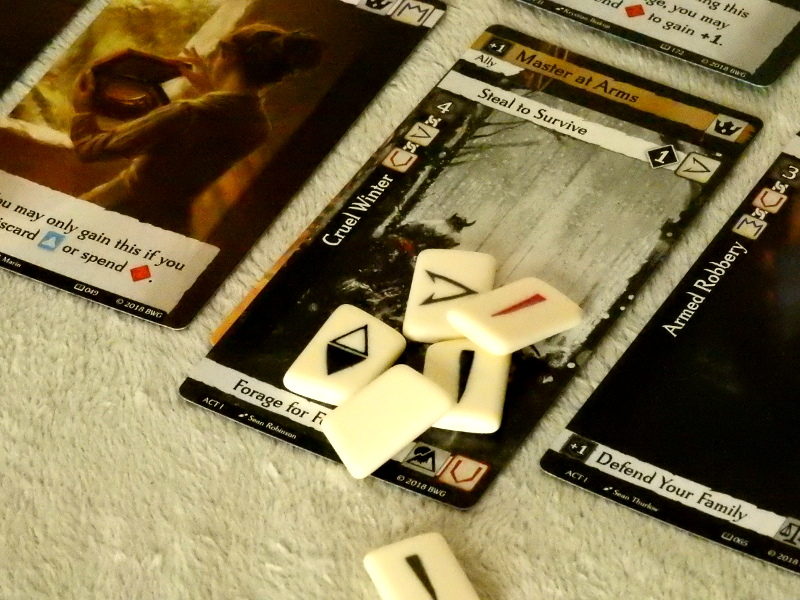

A Hero's Journey in Half the Runtime
 Generalu Stelaru
Generalu Stelaru
First things first. I’m in love with the concept of Call to Adventure. The premise given is that you take control of a talented youth – a gifted teenager with a dash of idealism, who’s determined to carve his or her destiny in a medieval high fantasy realm. As a simple reccommendation, if you’re into fantasy roleplaying, or if you enjoy the classic Once Upon a Time and other similar storytelling games; you will undoubtedly find something to chew here.
The visual representations on the tarot-sized game cards, as well as every game mechanism and rule, are so ripe for crafting a meaningful narrative, that you could easily play a session of Call to Adventure even only to extract a character’s background, or maybe the plot for your next RPG session. Just make sure you take notes as you play.
Mechanically, Call to Adventure is a not-so-complex tableau builder. In fact, it is very similar in basic design to Marc André’s hit – Splendor. You begin by gathering weak cards that enable you to obtain better ones, and so on. However, unlike Splendor’s limited pool of poker-chip currency, Call to Adventure uses a couple dozen of custom two-sided rune dice which players cast in order to obtain their cards.
As the game is focused on a fantasy adventure, your main assets are your character stats for Strength, Dexterity, Constitution, Intelligence, Wisdom, and Charisma. These are increased by the cards you collect and come into play selectively during Challenges (collecting attempt). You throw the bones and try to match the card’s difficulty rating. If you succeed, you take the card and place it in your tableau. If not, you discard it and get an Experience Point, the game's actual currency. That’s the core gameplay loop in a nutshell.
Individual Story Cards will also almost always feature two sets of Challenges and Rewards on which the active players will need to decide to aim for before they roll. Speaking of choices, at set-up, you will need to select three out of six special cards which, not only determine your characters’ initial stats and abilities, but also give access to various secret scoring opportunities, essentially giving you a goal and the tools to reach it.
Some Story cards also grant generic Victory Points and, besides those and the runes, many cards feature special story icons, which can become highly valuable if suits match. Just as your secret goals, the scoring options in Call to Adventure come from multiple sources. Even straight-up VP come in two flavors: Triumph and Tragedy; The amounts of which influence your available options in terms of granting or cutting access to certain Story cards. This concept of duality is also present in your hero's Morality Track.
Morality is a main concept in Call to Adventure. You track it on your player board and it contributes to your score positively or negatively. Victory-wise, you will want to persevere towards one or the other, but each comes with a specific limitation during the game.
Highly moral characters can only play Hero cards whie Immoral types are limited to Antihero cards. These cards are you aces-in-sleeves. Hero Cards improve the success rate of casting, give additional rewards, and are nearly the only avenue to increase Morality. In contrast, Antihero Cards can greatly decrease difficulty, they let you capitalize on opponents’ failures, and also allow you to mess with them on occasions. Keeping Morality in balance lets you play either type of card, but it won’t count for a lot in the end.
If Hero Cards can raise your morality, Dark Runes can accomplish the opposite. Using these runes is often tempting, especially in the early game, as they can supplement your rune pool in every Challenge for a cost of Experience Tokens. However, they also carry the risk of reducing Morality. Moreover, since the Antihero Cards give almost no opportunity for moral redemption, players who indulge in dark rune-casting will often find themselves unable to 'return to the light.' Isn’t that deliciously thematic? 🙂
As a gameplay experience, one session of Call to Adventure offers about an hour of tactical play, with at least nine highly variable decision forks in the hero’s journey. You’re always on a lookout for cards that gel with your secret goals, that complete icon sets, or that improve your rune arsenal. You’re also continually balancing the factors of risk and reward by using abilities, playing Hero/Antihero cards and adding in Dark Runes when needed. There’s also a decent amount of player interaction, which can get very competitive, especially if players keep track of each other’s capabilities and visible goals.
Call to Adventure feels balanced and is equally enjoyable with 2, 3, and 4 players respectively. The variable player count doesn’t modify gameplay in any way. I have to mention that there is a solo-play variant that also opens up to semi-cooperative play. In it, all players are trying to prevent a Villain from winning, at least until everyone gets a chance to challenge and defeat him. This variant can be a welcomed change of pace, where players can coordinate their approach, much like in any cooperative game.
The component quality sits somewhat on a spectrum. Without a doubt, the custom rune dice are the absolute stars of the game, but, unfortunately, the experience tokens look and feel cheap. The cardstock is thick, making sleeving purely optional, as you only shuffle each deck once per session, and story cards are never held in one's hand.
However, my real complaint with Call to Adventure is the ruleset. Although the core rules are explained clearly and are accompanied by examples, the rulebook fails to cover card iconography, leaving you to guess what specific icons mean. Unfortunately, the problem gets exacerbated due to the equally vague description of what elements form up a player's "Story," which is often referenced. The two pages of FAQ do clear-up some issues, but as a fresh-out-of-the-box experience, you should read the Living Rulebook.
Putting that aside, I rank the replay-value of Call to Adventure as adequate. I predict maybe twenty-five to thirty plays before you get bored of the cards and pull off all of the combos.
My final recommendation would be to play it once or twice before you decide to buy it. As a tableau building light tactical game, it has its issues, but if you enjoy evocative artwork and are a sucker for unique components, then I guess you shouldn’t pass this one up. At this time Brotherwise Games have released the game's first expansion, featuring the themes of Patrick Rothfuss’ Name of the Wind while the next one is set to treat Brandon Sanderson’s Stormlight. I can’t tell if these additions will prolong the game’s life, but they will probably add a layer of game customization and may add some flavor if you’re a fan of the novels.